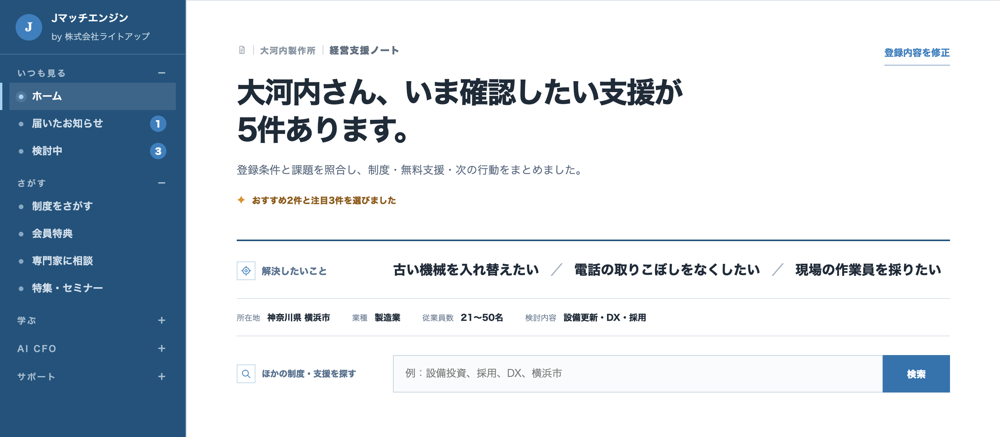

補助金・融資 × AI
使える制度を見逃さない。
見つけたら、すぐ書ける。
8項目で、使えそうな制度の候補と締切が分かります。その後も毎週金曜に届き、計画書はAIの質問に答えて書けます。
初期登録費用10万円＋月額3万円（税別）・成功報酬なし事例協力で初期登録費用0円の枠あり



01J-SYSTEM AI EDITION
8項目を入れると、
候補が5〜6件。
金融機関36・自治体29が使う補助金診断「Jシステム」の、AI版です。
→抽出された候補（右端は想定採択可能性）
- 小規模事業者持続化補助金補助金標準的
- IT導入補助金補助金標準的
- ものづくり補助金補助金やや低い
- 都道府県・市区町村の設備投資助成補助金標準的
- 設備資金の低利融資融資要追加確認
画面イメージです。制度名は例で、想定採択可能性はAIが示す参考情報です（採択を保証するものではありません）。
02WHY CONTINUOUS
一度調べて
終わりでは、
間に合わない。
制度は1年中、国・都道府県・市区町村から出てきます。
毎週届けば、3つとも間に合う。
必要になってから調べるWITHOUT
調べ始めた日（点線）には、2つが締切後。
毎週届くWITH
発表された週に届くので、3つとも準備できる。
帯の長さは公募期間のイメージです。

「検討中」は締切の近い順に並び、「あと何日」が大きく出ます。画面内の制度名・金額は架空です。横にスクロールできます。
関心はある。でも、申請していない経営層は81.1%。
補助金の活用に関心がありながら、申請手続きに至っていない経営層
申請に進めない理由の最多「自社に合う補助金が分からない」
経営計画を策定している小規模事業者
持続化補助金 第19回の採択率（16,576件中7,819件）
出典：81.1%・38.7%は btobee（2026年6月実施、中小企業の経営者・役員300人。事前調査3,000人からの抽出）／約2割は 中小企業庁「2026年版 小規模企業白書」第2-1-53図／47.2%は 中小企業庁 2026年7月29日発表
見つからない。書けない。
詰まるのは、この2つです。
だから、届ける。学べるようにする。書けるようにする。
03VALUE
届く。学べる。書ける。
月額3万円に、この3つ。
毎週金曜の朝、
合う制度が届く
- 補助金・融資・税制優遇
- 国・都道府県・市区町村
- 締切順に並ぶ「検討中」
採択された計画書で
学べる
- 採択された事業計画書
- 書き方の解説動画
- テンプレート
AIとの対話で、
土台を作れる
- 事業計画書の土台
- 融資相談の資料の土台
- 投資効果の計算

採択された計画書の一覧（画面イメージ）。画面内の会社名・制度名・金額・採択年は架空です。掲載する事例は、一般公開・掲載許諾済み・匿名加工済みの資料に限ります。横にスクロールできます。
導入について相談する申請の代行はしません。書くのは御社、AIはその手伝いです。
04AI AGENTS
白紙は埋まらない。
問いなら、
答えられる。
「強みを書いてください」ではなく、答えられる問いが順番に出てきます。
1つ答えるたびに、計画書の欄が1つ埋まります。
最近の顧客は、どんな会社？
顧客なぜ他社ではなく御社を？
強み何を導入・購入・開発する？
取組内容必要な経費は、いくら？
経費明細売上や利益は、どう増える？
投資効果市場や顧客は、どう変わった？
市場環境
AIの質問と、答えから下書きされた計画書（画面イメージ）。Claude Codeをベースに動きます。
05REUSE
通らなくても、
書いたものは
残ります。
聞かれることは、制度が変わっても大きくは変わりません。
一度書いた計画を、次の申請にも、融資にも。

書いた内容が貯まる「会社カルテ」（画面イメージ）。横にスクロールできます。
会社カルテAIとの対話で書いた、自社の計画
- 今年の補助金
- 翌年度の別の制度
- 銀行への融資相談
- 新規事業の計画
制度ごとの様式に合わせた書き足しは、そのたびに必要です。作り直しにはなりません。
06SUPPORT
迷ったときは、
人に相談できます。
主役はAI。つまずきやすい3つの壁には、人が付きます。
この方向で合っている？
専門家に相談
初回30分無料
採択後の先払いが重い
資金調達の窓口
相談先をご案内します
AIの使い方が分からない
AI家庭教師
月2時間まで追加料金なし（超過は1時間1万円・税別）
07PRICE
初期登録費用
10万円＋月額3万円。
成功報酬なし。
採択されても、受給額が大きくても、お支払いは増えません。
Jマッチエンジン AI自走プラン
30,000円／月（税別）初期登録費用 100,000円（税別）・成功報酬なし
探す
毎週金曜の配信、8項目の候補抽出、検討中
学ぶ
採択された計画書、解説動画、テンプレート
書く
AIエージェント、計画書・融資資料の土台、会社カルテ
相談
専門家（初回30分無料）、AI家庭教師（月2時間）、資金調達の窓口
含まれないもの：Claude Code の利用料（米Anthropic社のAIツール。御社で直接ご契約ください）、申請の代行・提出書類の作成
導入事例へのご協力で、初期登録費用が0円になる枠があります
- 利用後の感想
- 簡単なインタビュー
- 利用状況と改善要望
- 導入事例として掲載
掲載内容は、公開前に必ず御社がご確認ください。値引きではなく、事例づくりへのご協力との交換です。月額30,000円（税別）は通常どおり。受付枠と期限は、ご相談の際に個別にご案内します。
向いている会社
- 計画を作る力を、社内に残したい
- 設備投資・採用・新規事業の予定がある
- 出てくる制度に、何度も手を挙げたい
向いていない会社
- 申請書類の作成まで丸ごと任せたい
- 今回の1件だけ申請できればよい
金額はすべて税別です。最低利用期間・解約・返金の条件は、ご契約前に書面でお示しします。
08FLOW
お申し込みから、
計画書づくりまで。
はじめに初期登録費用の範囲
- お申し込み・ヒアリング投資・採用・新規事業の予定を伺います
- 会社情報の初期登録所在地・業種・従業員数など8項目。ここで最初の候補が出ます
ここから毎週月額3万円の範囲
- 金曜の配信合う制度が届く
- 検討中締切の近い順
- AIの問い答えるたびに1欄
- 計画書の土台様式に合わせて仕上げ
- 会社カルテ書いた内容が貯まる
カルテの中身は、次の制度と融資相談でそのまま使えます
どの段階でも、専門家（初回30分無料）・AI家庭教師（月2時間まで）・資金調達の窓口に相談できます。
09FAQ
申し込む前の、
確認事項。
Claude Code の利用料は、月額に含まれますか。
含まれません。Claude Code は米Anthropic社のAIツールで、AIエージェントはこの上で動きます。利用料は御社で提供元と直接ご契約ください。初期設定は導入時にご案内します。
AIが申請書を完成させてくれますか。
いいえ。AIが作るのは事業計画の土台です。制度ごとの提出様式を埋めて仕上げるのは、御社ご自身か、有資格者の先生になります。申請の代行も行いません。
採択や融資の承認は保証されますか。
いいえ。補助金は制度の実施機関が、融資は金融機関が判断します。採択率・受給額・承認をお約束することはありません。画面に出る想定採択可能性も、AIが示す段階表示の参考情報です。
Claude Code を使ったことがなくても利用できますか。
使ったことがない前提で設計しています。AIから順番に質問が出るので、事実を思い出して答えていただく形です。分からないときはAI家庭教師（月2時間まで追加料金なし）に聞けます。
自社でどこまで作業する必要がありますか。
質問への回答は御社にお願いします。会社の事実を知っているのは御社だけだからです。白紙から文章を書く作業は不要ですが、手を動かしていただく必要はあります。
作った事業計画を、融資や顧問の先生への相談にも使えますか。
はい。補助金で聞かれることと、金融機関で聞かれることは多くが重なります。顧問の税理士や行政書士に渡す整理資料としても使えます。
補助金の入金はいつですか。
補助金は、多くの制度で事業を実施したあとの精算払いです。先に支払う分の資金は、自己資金か借入でご用意いただく形になります。時期や条件は制度ごとに異なるため、公募要領・交付要領でご確認ください。
どのような採択事例を閲覧できますか。
一般公開されている資料、掲載許諾を得ている資料、企業を特定できないよう適切に匿名加工した資料に限ってご覧いただけます。企業秘密や個人情報、掲載許諾が確認できない資料は掲載しません。
最低利用期間、解約、返金、お預かりする情報の取り扱いは？
いずれもご契約前に、書面と利用規約・プライバシーポリシーでご提示します。お申し込みの前に、必ずご確認いただけます。
使える制度を見逃さず、
見つけたら、すぐ書ける会社へ。
初期登録費用10万円＋月額3万円（税別）。成功報酬はありません。導入事例へのご協力で、初期登録費用が0円になる枠があります。
導入について相談する受付枠と期限は、ご相談の際に個別にご案内します